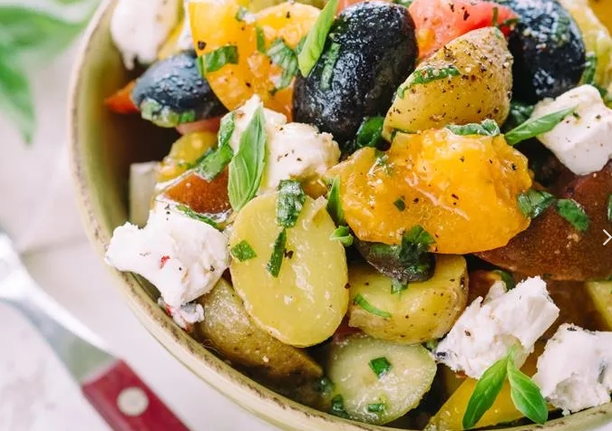

Картофельный салат средиземноморский


Ингредиенты
- 750 гр. baby картофеля
- вяленые томаты (банка 280 гр., масло оставитьв банке - можно для жарки использовать)
- банка маслин (drained 150 гр.)
- 4 ст.л оливкового масла
- 4 ст.л. семян чиа
- 30 гр. базилика
- 2 ст.л. каперсов
- упаковка рукколы или смеси салатной зелени
- шафран
Сварить 750 гр. картофеля (разрезав на bite-size кусочки) со щепоткой шафрана и соли. Слить воду и дать остыть.
Положить в миску банку вяленых томатов порезанных на кусочки (без масла), банку маслин, крупно нарезанных, 4 ст.л оливкового масла, 4 ст.л. семян чиа, 30 гр. базилика, 2 ст.л. каперсов. Добавить остывший картофель и аккуратно перемешать. Добавить рукколу или смесь салатной зелени. Приправить солью и перцем.